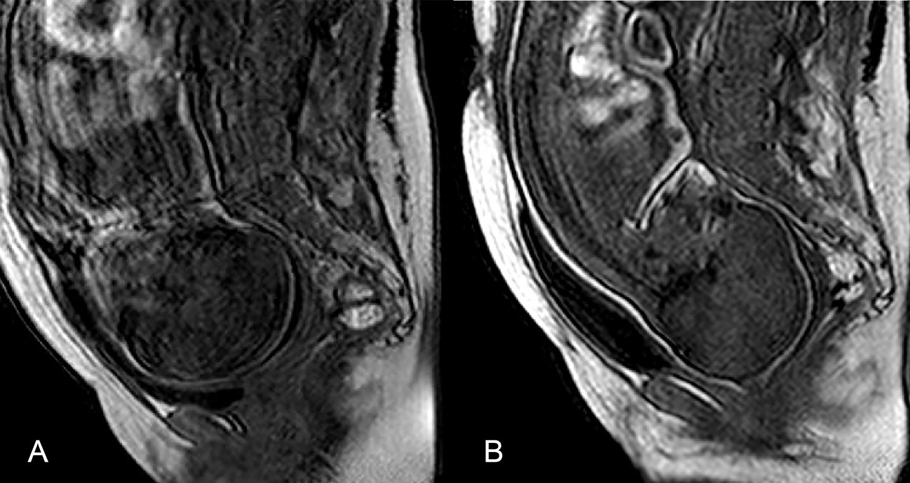

Fetal head and pelvis before and during labor
The same source patient is pictured before labor (A) and during the second stage (B). This paired median sagittal MRI supplies observed regional anatomy, rather than a continuous birth movie.

The two images have different framing and are not registered. Their exact elapsed interval is unreported. Do not read a continuous head trajectory, contraction sequence, cervical-dilation movie or pressure measurement into the comparison. There is no source scale bar.
Prelabor MRI was performed at 36–39 gestational weeks; the second-stage cohort was beyond 39 weeks, with full dilation clinically confirmed and imaging within 10 minutes before expulsive efforts. Participants were at rest during acquisition. The study used a 1 T open Philips Panorama scanner without contrast; the caption does not uniquely assign a listed sequence to this exported pair.
The study included 27 prelabor scans and seven second-stage scans, with five uninstrumented vaginal births and two emergency Caesareans. This one paired case does not establish a universal uncomplicated birth course, clinical prognosis or placental delivery.
Ami et al. (2019), Three-dimensional magnetic resonance imaging of fetal head molding and brain shape changes during the second stage of labor, PLOS ONE 14:e0215721, Figure 3, patient 5. © Authors; CC BY 4.0. Whole original publication JPEG extracted unchanged from the source PDF; no crop, retouch, new leader or scale. Source and extraction record · Reproduction record.